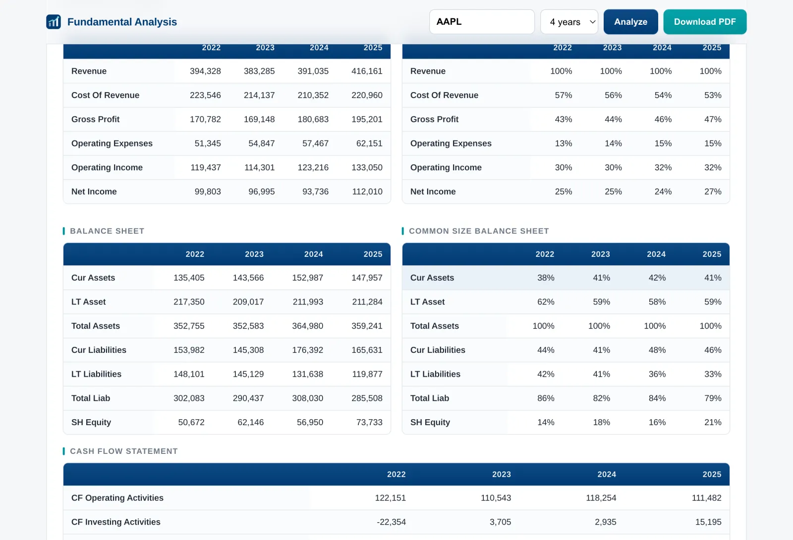
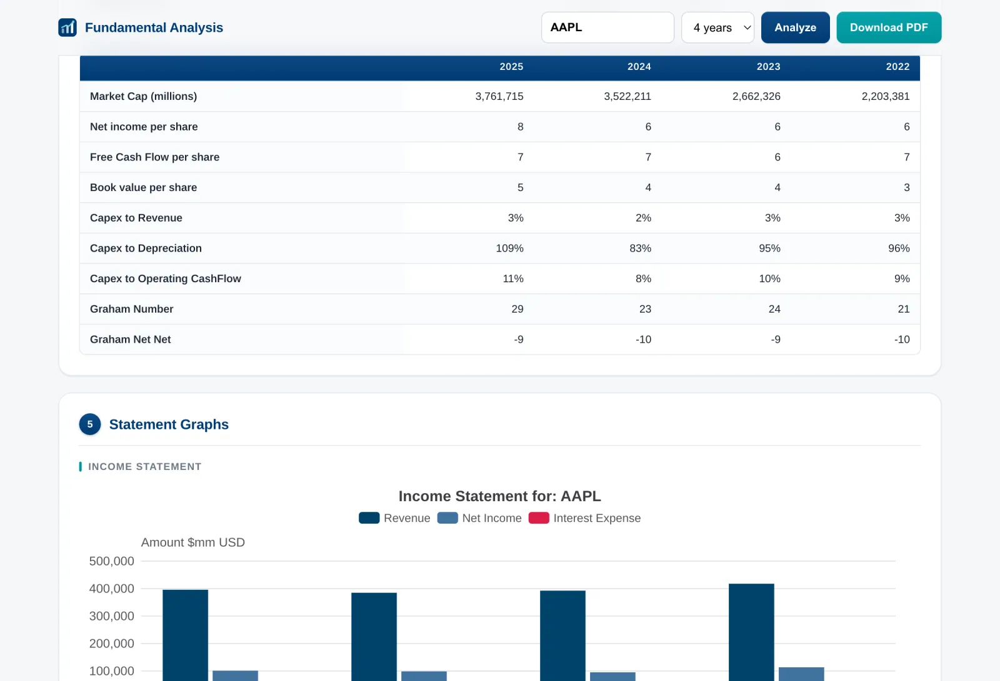
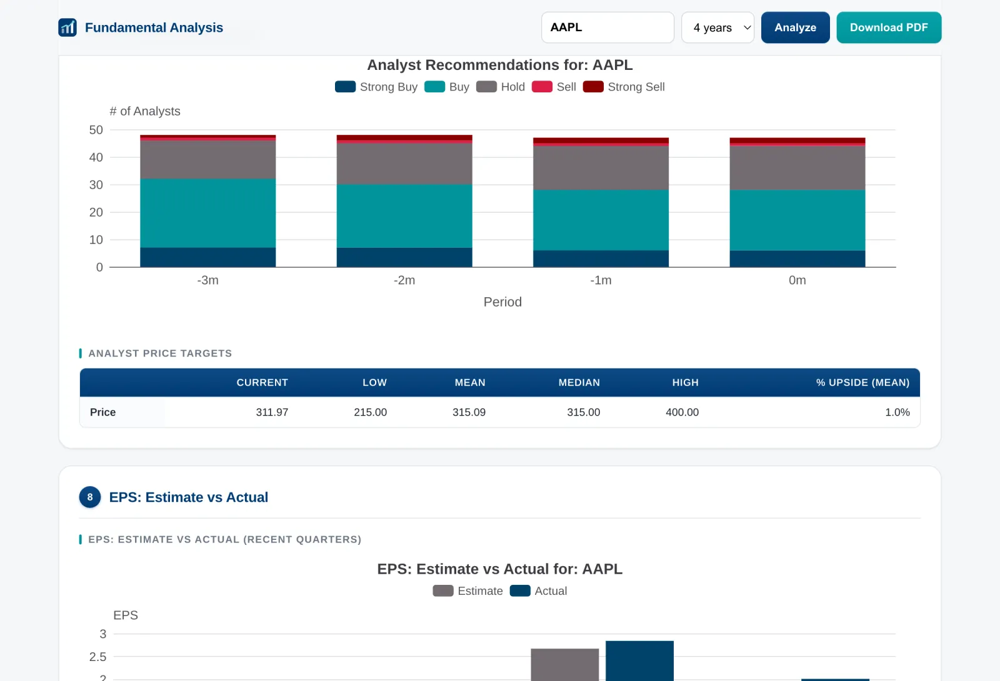
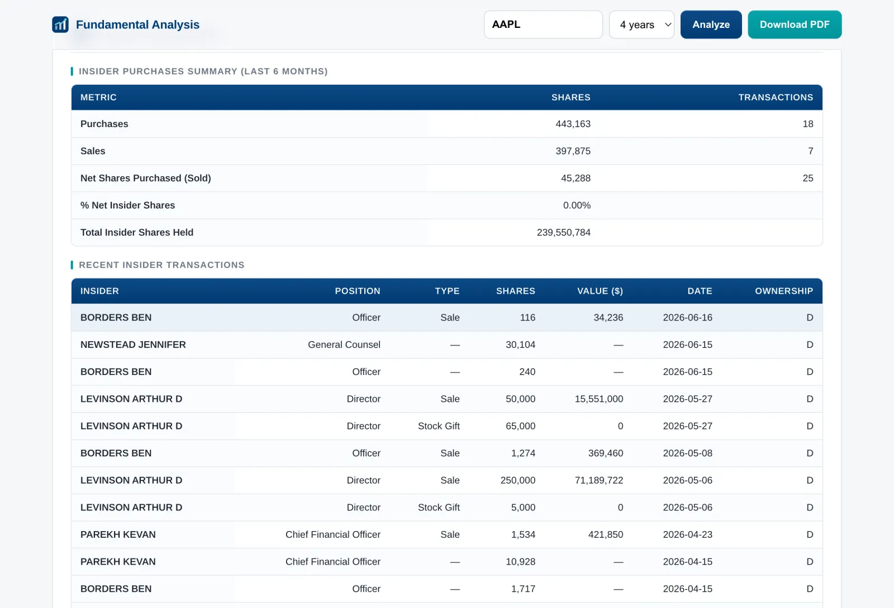
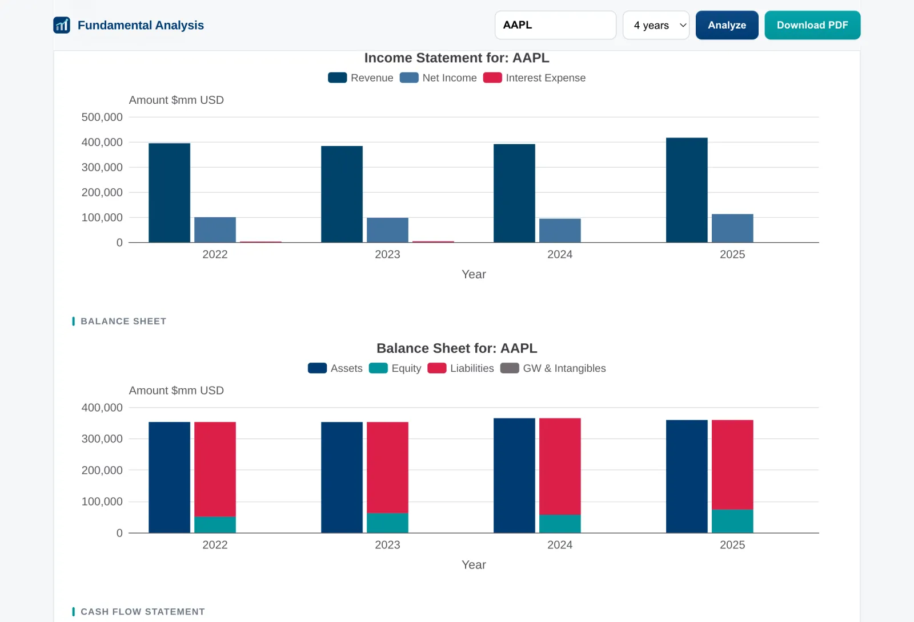
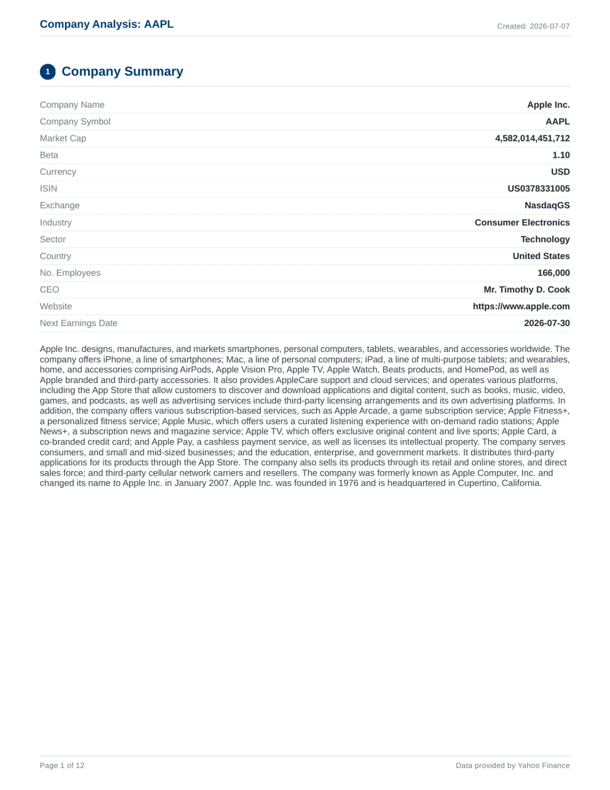
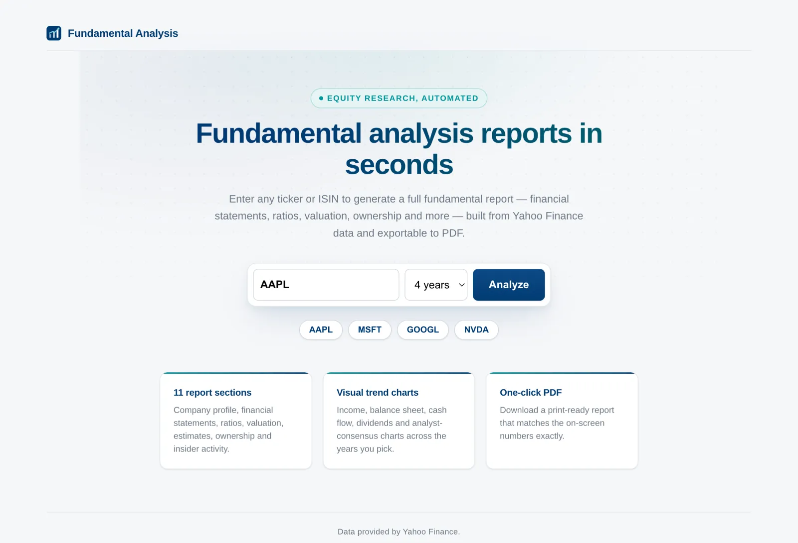

Tabla de Contenidos
Este post explica cómo reconstruí mi reporte financiero automatizado como una aplicación web. Escribes un ticker, la app construye un reporte de análisis fundamental de 11 secciones en el navegador, y puedes descargar el mismo reporte en PDF.
La app está en línea aquí, y el código fuente está en GitHub.
De script PDF a app web
Hace tiempo escribí un script de Python que genera un reporte PDF de análisis fundamental para cualquier empresa pública. Lo seguía usando con frecuencia, pero tenía dos limitaciones.
Primero, los datos venían de una API de paga. El plan gratuito estaba limitado a 250 peticiones por día y solo cubría empresas de Estados Unidos. Segundo, el resultado era un PDF local: para analizar una empresa había que tener Python instalado, clonar el repositorio y correr el script.
Primero resolví el problema de los datos cambiando la fuente a Yahoo Finance. Es gratuita, no necesita API key y cubre tickers internacionales. También expone datos que la API de paga no me daba en el plan gratuito: recomendaciones de analistas, precios objetivo, sorpresas en resultados, estimaciones futuras, estructura accionaria y transacciones de insiders.
Después eliminé el problema de "necesitas Python" reescribiendo todo el pipeline como una app web en TypeScript con Next.js. El reporte ahora se muestra en el navegador para cualquiera con la URL, y el PDF sigue a un clic de distancia.
Qué incluye el reporte
Cada reporte cubre los últimos tres o cuatro años fiscales y está organizado en 11 secciones:
- Resumen de la empresa: perfil, descripción del negocio, CEO, sector, próxima fecha de resultados.
- Estados financieros: estado de resultados, balance general y flujo de efectivo, en términos nominales y porcentuales.
- Razones de riesgo y rendimiento: deuda, rentabilidad y eficiencia.
- Valuación: razones de mercado y métricas clave, incluyendo el Número de Graham y el valor Net-Net.
- Gráficas de los estados financieros.
- Gráficas porcentuales y usos del capital.
- Historial de dividendos, recomendaciones de analistas y precios objetivo.
- UPA estimada vs real y sorpresas en resultados.
- Estimaciones futuras de utilidades e ingresos.
- Estructura accionaria: principales accionistas e institucionales.
- Compras de insiders y transacciones recientes de insiders.

Estados financieros, mostrados en millones y como porcentaje de los ingresos

Razones de mercado y métricas clave, incluyendo el Número de Graham
Las últimas cinco secciones son nuevas: la versión en Python solo cubría estados financieros, razones y gráficas. El consenso de analistas, las estimaciones, la estructura accionaria y la actividad de insiders vienen de módulos de Yahoo Finance que antes no tenía disponibles.

Recomendaciones de analistas de los últimos meses

Resumen de compras de insiders y transacciones recientes
Una sola fuente de verdad para web y PDF
La decisión de diseño más importante fue que la página web y el PDF consumieran exactamente los mismos datos. Una sola función, buildReport(ticker, years), orquesta todo el pipeline: obtiene los datos, calcula las razones, recorta a los años solicitados y construye cada tabla y cada definición de gráfica.
La página interactiva la llama a través de un endpoint JSON y la ruta del PDF llama a la misma función. No existe un "pipeline de PDF" separado que pueda desincronizarse: si un número aparece en pantalla, el número idéntico aparece en el PDF.
Además, cada petición es independiente. Nada se escribe a disco entre peticiones, así que la app puede atender usuarios concurrentes sin ninguna coordinación, lo que simplifica el hosting.
Obteniendo datos de Yahoo Finance
La capa de datos usa yahoo-finance2, un cliente de Node.js de código abierto para los mismos endpoints que usa la librería yfinance de Python. Un reporte necesita cinco peticiones: estados financieros anuales, un lote de módulos de resumen, historial de precios, historial de dividendos y una búsqueda de ISIN. Todas corren en paralelo.
Los datos de Yahoo no son oficiales, así que algunas piezas fallan de vez en cuando. Cada petición tiene su propio respaldo: si la llamada en lote falla, la app reintenta los módulos uno por uno para que un módulo defectuoso no hunda a los otros doce.
TypeScript
async function safeQuoteSummary(symbol: string, modules: string[]): Promise<Row> {
try {
return await yf.quoteSummary(symbol, { modules });
} catch {
// Fetch modules individually so one bad module doesn't sink the rest.
const out: Row = {};
for (const m of modules) {
try {
const r = await yf.quoteSummary(symbol, { modules: [m] });
Object.assign(out, r);
} catch {
/* tolerate missing module */
}
}
return out;
}
}
La misma filosofía aplica al momento de mostrar los datos. Una empresa sin dividendos, sin cobertura de analistas o sin registros de insiders simplemente muestra un guion u omite la gráfica. Un dato faltante nunca se convierte en un reporte fallido.
Calculando las razones financieras
El reporte calcula alrededor de 30 razones en cuatro grupos: deuda (razón circulante, cobertura de intereses, flujo a deuda), rentabilidad (márgenes, ROE, ROIC, ROCE), eficiencia (ciclo de conversión de efectivo, rotaciones) y razones de mercado (P/U, P/VL, múltiplo EV, rendimiento de dividendos).
Este módulo es una traducción línea por línea de la versión en Python, así que pude verificar cada valor contra reportes que el script anterior ya había producido. Las divisiones pasan por un helper safeDiv() que regresa null en lugar de infinito cuando un denominador es cero o falta, y los valores derivados tienen cadenas de respaldo: el flujo de efectivo libre usa la cifra reportada cuando Yahoo la entrega y, si no, flujo operativo menos inversiones de capital.
Mis métricas favoritas de la sección de valuación son los dos números de Benjamin Graham:
TypeScript
const eps = safeDiv(r.netIncome, sharesYear[i]);
const bvps = safeDiv(b.totalStockholdersEquity, sharesYear[i]);
// Graham Number: fair value estimate for a defensive investor.
let grahamNumber: Num = null;
if (eps != null && bvps != null && eps > 0 && bvps > 0) {
grahamNumber = Math.sqrt(22.5 * eps * bvps);
}
// Net-Net: current assets minus all liabilities, per share.
const netNetNum =
b.totalCurrentAssets == null || b.totalLiabilities == null
? null
: b.totalCurrentAssets - b.totalLiabilities;
const grahamNetNet = safeDiv(netNetNum, sharesYear[i]);
Escribir las gráficas una vez, dibujarlas dos veces
Las gráficas están hechas con Apache ECharts. Cada constructor de gráficas es una función pura que regresa un objeto de opciones; no sabe nada sobre dónde se va a dibujar la gráfica.

Gráficas de los estados financieros: los mismos objetos de opciones alimentan el navegador y el PDF
En el navegador, los objetos de opciones van directo a echarts-for-react. Para el PDF, la parte interesante es dibujarlas sin un navegador: ECharts puede correr headless en el servidor y emitir un SVG, y resvg rasteriza ese SVG a PNG. Sin Puppeteer y sin Chromium en el despliegue.
TypeScript
export async function chartToPng(option: ChartOption, width = 800, height = 400) {
// 1. ECharts headless SSR -> SVG string
const chart = echarts.init(null, null, { renderer: "svg", ssr: true, width, height });
chart.setOption(option);
const svg = chart.renderToSVGString();
chart.dispose();
// 2. resvg rasterizes the SVG with bundled fonts -> PNG
const resvg = new Resvg(svg, {
font: {
fontFiles: FONT_FILES, // Arimo Regular + Bold, shipped with the app
loadSystemFonts: false, // deterministic across environments
defaultFontFamily: "Arimo",
sansSerifFamily: "Arimo",
},
fitTo: { mode: "width", value: width * 2 }, // 2x raster for crisp PDF text
});
const png = resvg.render().asPng();
return `data:image/png;base64,${Buffer.from(png).toString("base64")}`;
}
La configuración de fuentes importa más de lo que parece. Cargar las fuentes del sistema hacía que las etiquetas de las gráficas se dibujaran como cajas vacías en el servidor, así que la app incluye su propia copia de Arimo y nunca recurre a las fuentes del sistema. Arimo es métricamente compatible con Helvetica, que es la fuente del cuerpo del PDF, así que el texto de las gráficas y el del documento coinciden.
Caché y límites de peticiones
Yahoo Finance no tiene una API oficial, así que ser prudente con el volumen de peticiones es parte del diseño. Los reportes se guardan en caché por diez minutos, con una llave de ticker, años y día calendario. Cargar la página y luego descargar el PDF le pega a Yahoo una vez, no dos.
Un detalle que vale la pena copiar: el caché guarda la promesa, no el resultado terminado. Si dos usuarios piden el mismo ticker al mismo tiempo, la segunda petición se une a la primera en lugar de disparar un duplicado. Las fallas borran la entrada del caché para que un error nunca se sirva durante diez minutos.
TypeScript
const TTL_MS = 10 * 60 * 1000;
const cache = new Map<string, { at: number; promise: Promise<Report> }>();
export function buildReport(ticker: string, years: number): Promise<Report> {
const key = `${ticker.toUpperCase()}:${years}:${new Date().toISOString().slice(0, 10)}`;
const hit = cache.get(key);
if (hit && Date.now() - hit.at < TTL_MS) return hit.promise;
const promise = build(ticker, years).catch((e) => {
cache.delete(key); // don't cache failures
throw e;
});
cache.set(key, { at: Date.now(), promise });
return promise;
}
Generando el PDF
El PDF está construido con react-pdf, que permite describir el documento como componentes de React: el mismo modelo mental que la página web, con páginas en lugar de secciones. El documento replica las 11 secciones y resulta en unas 12 páginas.
Como las tablas y las imágenes de las gráficas vienen del mismo objeto compartido, el PDF es una versión impresa fiel de lo que está en pantalla: mismos valores, mismas gráficas, mismas fuentes.

Primera página del reporte PDF de Apple
Pruébalo tú mismo
La app está desplegada en stock-fundamentals.pablocruz.io. Escribe un ticker o escoge uno de los ejemplos, elige tres o cuatro años y presiona Analyze. Los estados anuales de Yahoo solo llegan de manera confiable a unos cuatro años atrás, por eso el selector se detiene ahí.

La página de inicio: escribe un ticker o ISIN y presiona Analyze
El reporte también está disponible directamente a través del API:
Bash
# Full report as JSON
curl "https://stock-fundamentals.pablocruz.io/api/report?ticker=AAPL&years=4"
# Same report as a PDF
curl -o aapl.pdf "https://stock-fundamentals.pablocruz.io/api/report/pdf?ticker=AAPL&years=4"
Reflexiones finales
Portar un pipeline funcional de Python a TypeScript fue menos riesgoso de lo que suena: el script anterior sirvió como una especificación ejecutable, y pude comparar cada tabla contra reportes que ya había generado.
Todavía hay espacio para crecer: análisis trimestral, comparación contra promedios del sector, y una cola de trabajos si el tráfico llega a ser pesado para los endpoints no oficiales de Yahoo.
Como con el proyecto original, recuerda que el análisis fundamental es solo una parte del proceso de selección de acciones. Usa el reporte para entender una empresa, no como una señal de compra.
Puedes ver mis otros proyectos aquí.
Pablo.
Ponte en contacto!
Actualmente estoy abierto a nuevas oportunidades y me encantaría
platicar.
No dudes en contactarme si te interesa lo que puedo aportar a tu
proyecto o equipo.